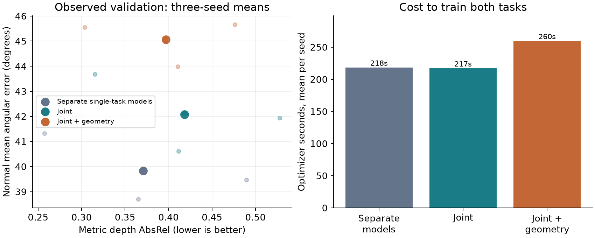
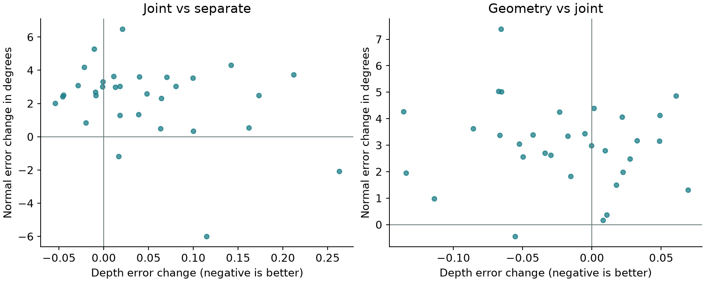
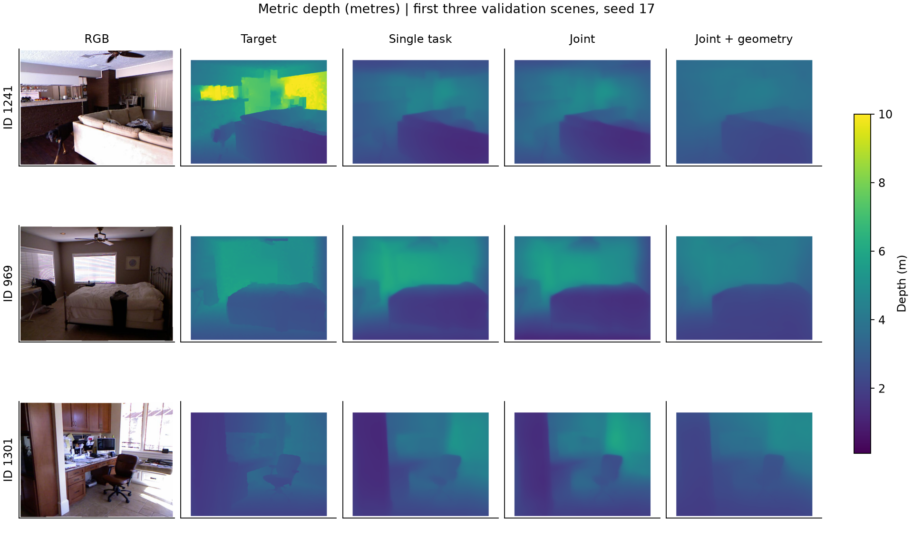
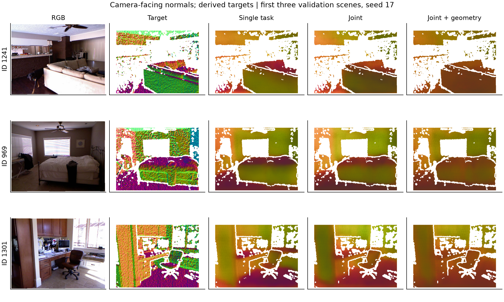

ELEC4240 · 2026-10-02 · HO, Chun Wai 21053878; Tong, Man Hung 21064669; MA, Shenhan 21041382.
Exploratory development study: one training draw, three seeds, 128 training scenes and 32 previously observed validation scenes. Normal targets are derived from depth and are not independent measured normal ground truth. No per-image ground-truth depth alignment is used.
A pinned Marigold Depth v1.1 backbone uses rank-4 attention LoRA (829,952 trainable parameters), frozen VAE/text encoder and two fixed CLIP task prompts. We train at 192×256 for 320 updates using the one-step, zero-SNR t=999 velocity objective. Depth is represented by a fixed log encoding over 0.1–10 metres; normals occupy all three decoded channels and are unit-normalized. This is an adaptation of a depth model, not a reproduction of Vision Banana's generalist or generation-preservation claims.
Joint updates use the same image and noise for both tasks, averaging the two supervised losses. Each task receives exactly 320 image exposures, matching its single-task control: only 2.5 passes over 128 images. This is a bounded pilot, not evidence of converged training. Joint models require two UNet forwards per update. The geometry variant adds 0.1 times cosine disagreement between the decoded normal and the camera-facing normal derived from decoded metric depth, with gradients through both branches. Its extra VAE decoding/backward cost is included.
Source RGB and filled metric depth are unchanged NYUv2 arrays. Official toolbox RGB calibration uses 1-based pixel coordinates; resizing uses half-pixel-consistent rays. We treat projected depth as camera-z in the RGB pinhole approximation. Normal targets use sigma-1 smoothed filled depth, with a three-pixel eroded raw-depth agreement mask and exclusion around measured depth discontinuities. This filters unreliable labels but also excludes difficult regions; normal quality and coverage therefore constrain claims. Raw-depth AbsRel is retained as a secondary depth metric.
The normal mask retains an average 77.9% of depth-evaluation pixels per validation image (range 45.0%–90.7%). Accuracy on excluded boundaries, missing-depth regions and the rest of the image is not established.
Values are equal-scene means ± sample SD of the three seed means. All depth metrics use metre-valued predictions without alignment; AbsRel is dimensionless and RMSE is in metres. A common fixed 0.1–10m prediction clip applies to all depth methods. All checkpoints are the fixed final update, with no best-seed selection.
| Training | Depth AbsRel ↓ | RMSE (m) ↓ | δ1 ↑ | Normal mean (°) ↓ | Normal <22.5° ↑ | Train s |
|---|---|---|---|---|---|---|
| depth | 0.3707 ± 0.1163 | 0.9788 ± 0.2046 | 0.4544 ± 0.1164 | — | — | 109.4 |
| normal | — | — | — | 39.83 ± 1.35 | 0.2245 ± 0.0305 | 108.9 |
| joint | 0.4182 ± 0.1064 | 1.0616 ± 0.1829 | 0.4226 ± 0.0769 | 42.08 ± 1.54 | 0.1823 ± 0.0114 | 217.1 |
| joint_geometry | 0.3968 ± 0.0871 | 0.9796 ± 0.0919 | 0.4458 ± 0.0497 | 45.07 ± 0.94 | 0.1471 ± 0.0174 | 259.8 |
Training-only constant depth: AbsRel 0.49818; native Depth Anything V2 reference: 0.23663; constant camera-facing normal: 48.81°. The specialist uses Hypersim metric fine-tuning and its official default processor, so prior supervision and input cost differ.
Across all 12 formal runs, optimizer time totals 34.76 minutes; peak PyTorch-allocated training memory is 3164.2 MiB. Median inference time per image on this laptop: depth: 81.6 ms; normal: 81.0 ms; joint: 150.9 ms; joint_geometry: 148.1 ms. Each joint timing produces both requested outputs; each single-task timing produces one.

Large points show three-seed means; faint points show individual seeds. Separate single-task models use two adapters in total; joint variants share one. Optimizer times exclude model loading and the one-time shared target cache. Inference timings are descriptive sequential local measurements, not controlled latency benchmarks.
Negative changes indicate lower error. Scene counts average all three seeds before classifying direction, without significance or equivalence claims. Both joint variants are compared directly with the depth-only and normal-only models.
| Model | Depth AbsRel change | Normal angle change | Both improve | One improves, one worsens | Both worsen |
|---|---|---|---|---|---|
| joint | +0.04751 | +2.25° | 0/32 | 14/32 | 18/32 |
| joint_geometry | +0.02617 | +5.24° | 0/32 | 16/32 | 16/32 |
| Comparison | Error metric | Mean change | Unadjusted percentile 95% interval | Holm4 p |
|---|---|---|---|---|
| joint − depth | depth.abs_rel | +0.04751 | [+0.01973, +0.07882] | 0.00630 |
| joint − normal | normal.mean_deg | +2.24503 | [+1.30660, +3.09088] | 0.00030 |
| joint_geometry − joint | depth.abs_rel | -0.02134 | [-0.05571, +0.00720] | 0.19344 |
| joint_geometry − joint | normal.mean_deg | +2.99213 | [+1.89124, +4.07545] | 0.00020 |
Paired crossed scene/seed bootstrap uses 20,000 replicates. Two-sided centered tests are adjusted over the four fixed contrasts. Only three seeds and an observed validation set are available; these approximate exploratory p-values do not establish independent generalization. A nonsignificant difference is not equivalence. Lower geometric disagreement alone would not prove better depth or normal accuracy.

Each point averages the three seeds for one validation scene. Lower-left indicates improvement in both tasks; upper-right indicates degradation in both.
This descriptive check compares normals derived from saved predicted depth with saved predicted normals on the fixed normal mask. It uses full-resolution central differences without smoothing, so its values are not the native-resolution training penalty. It adds no hypothesis tests to the frozen family. Target-normal values and GT scale alignment are not used; agreement does not imply accuracy.
| Model | Mean 1 − cosine ↓ | Mean disagreement angle ↓ |
|---|---|---|
| separate | 0.3030 | 42.10° |
| joint | 0.3797 | 48.54° |
| joint_geometry | 0.1763 | 31.11° |


The examples are the first three manifest scenes and fixed seed17. White target/prediction areas denote excluded evaluation pixels. Their selection is independent of prediction quality.
Visual inspection found noisy derived normal targets. A post-hoc check on all 128 training images gives 7.92° mean angular change after a target-only 192×256 downsample/upsample round trip. Changing the depth smoothing from sigma 1 to sigma 2 or 4 changes the labels by 9.97° and 20.87°, respectively, on the unchanged mask. These are sensitivity measurements, not model baselines, physical ground truth or error lower bounds. They do not explain away the observed negative transfer. No labels, models or frozen results were changed. See the training-only records.
See verification.json for independent recomputation of all 576 learned task predictions and 32 specialist predictions, checkpoint restoration and preservation of previous artifacts. The frozen protocol, all seed-level summaries and source scripts are retained. Local raw arrays, labels, checkpoints and model caches are excluded from Git. The previous final PDF remains unchanged.
Under this short training budget, the shared adapter worsens both tasks relative to their single-task controls in every seed. Geometric regularization reduces prediction-to-prediction disagreement, but its mean depth improvement over ordinary joint training does not pass the fixed exploratory adjustment, while its normal error increases. The geometry model also has worse three-seed mean errors than both separate controls and costs about 20% more optimizer time than ordinary joint training. These results support reporting a task tradeoff, not a successful improvement over the single-task methods.
The next stage should first establish stable metric-depth learning curves and better-validated normal targets. Then compare task-specific adapters with the shared adapter while accounting for their different parameter counts, and test delayed or confidence-weighted geometric regularization as separate ablations. These are future hypotheses; this experiment does not identify gradient conflict, adapter capacity, target noise or the fixed loss weight as the proven cause. A new versioned protocol should retain these results rather than replace them with a favorable setting.
This bounded study establishes an executable staged comparison and exposes positive or negative transfer under its constraints. Stronger claims need additional training draws, genuinely unobserved scenes and independently measured normal labels. Metric encoding is numerically invertible only within its fixed interval; neither the encoding nor depth-normal consistency identifies absolute scale without metric supervision.
Sources: NYUv2 data and toolbox; Marigold 2025; GeoNet: joint depth and normals.